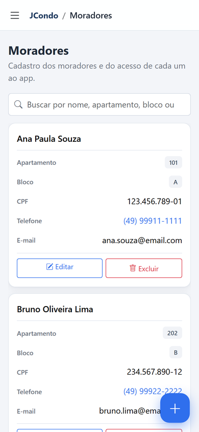
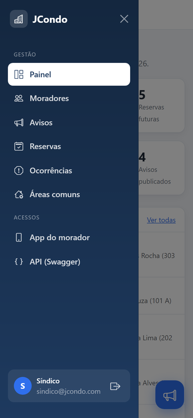
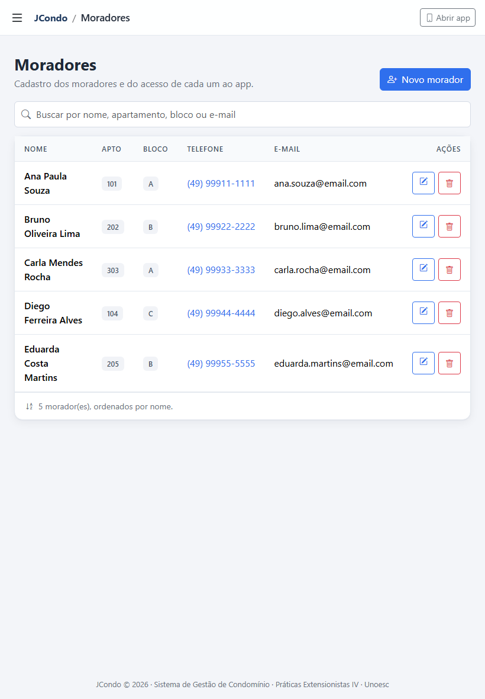
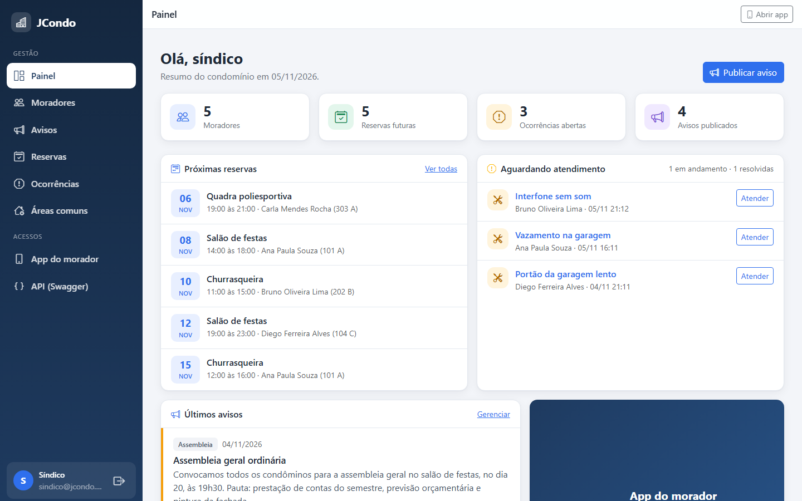
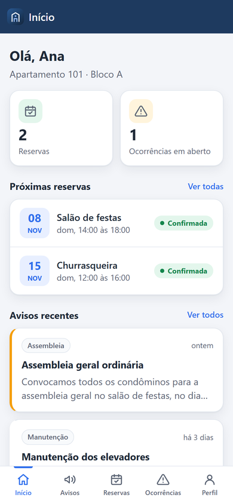
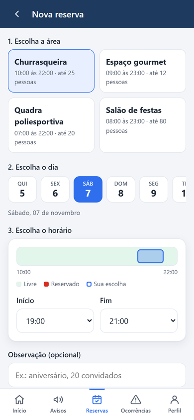
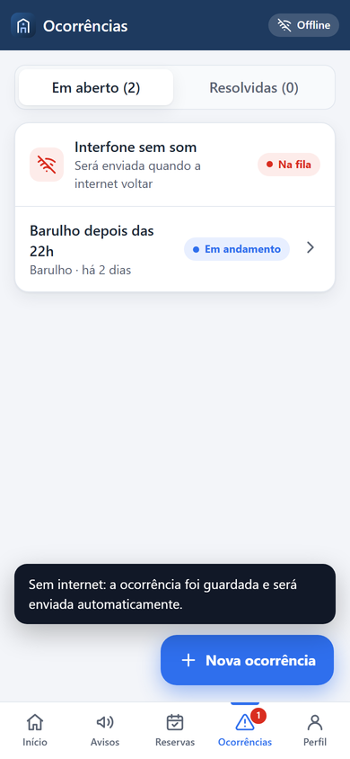
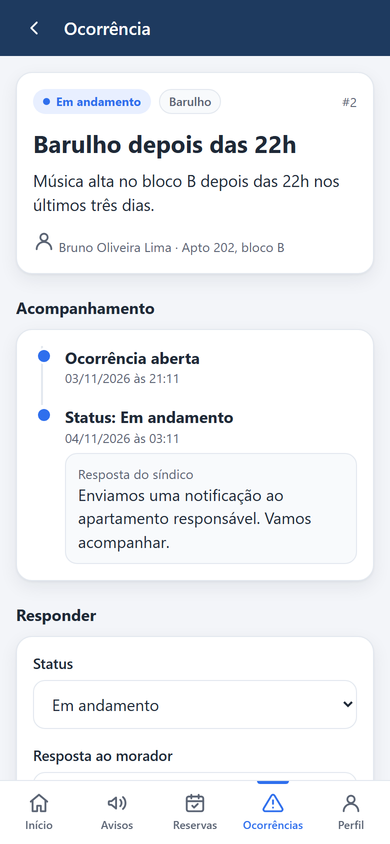
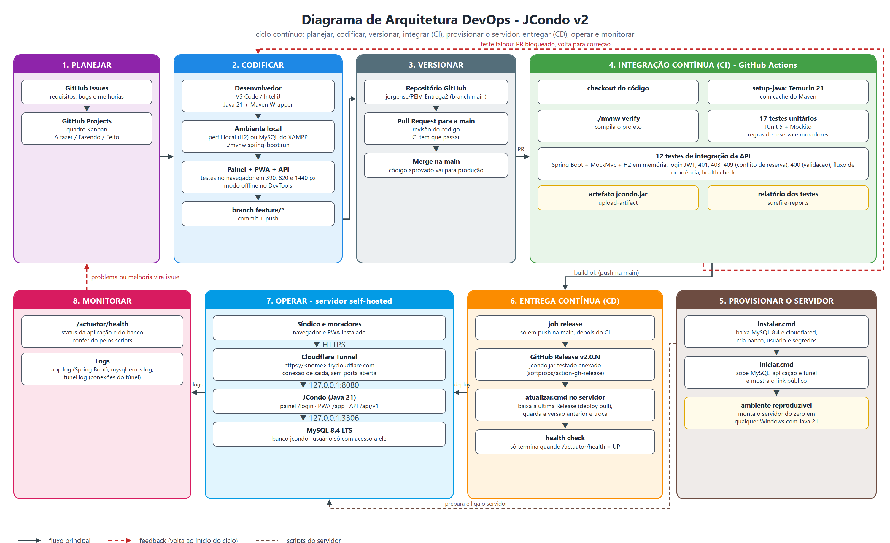

Entrega 2: responsividade, PWA, API e infraestrutura
Jorge Luiz do Nascimento
Chapecó - SC, 5 de novembro de 2026
1. Integrantes do grupo
#
Nome
1
Jorge Luiz do Nascimento
2. Repositório no GitHub
https://github.com/jorgensc/PEIV
Todo o código da aplicação responsiva, da versão mobile (PWA) e da API está publicado no repositório, junto com os scripts e a descrição da infraestrutura. O que entrou nesta entrega:
Caminho
Conteúdo
app/src/main/java/jcondo/api
API REST /api/v1 (controllers e DTOs)
app/src/main/java/jcondo/security
login do painel, JWT da API e perfis síndico/morador
app/src/main/resources/templates
painel do síndico responsivo (Thymeleaf + Bootstrap)
app/src/main/resources/static/app
app mobile PWA: manifest, service worker, telas, ícones
app/src/test
30 testes (unitários e de integração da API)
infra/
scripts do servidor self-hosted (instalar, iniciar, atualizar, backup, parar)
doc/infraestrutura.md
descrição completa da configuração da infraestrutura
doc/api.md
documentação da API (rotas, regras, erros, exemplos)
doc/telas, doc/*-v2.png
capturas das telas e diagramas atualizados
.github/workflows/ci-cd.yml
pipeline: testes a cada push e Release com o .jar na main
Sobre a aplicação nesta entrega
Na Entrega 1 o JCondo tinha só o cadastro de moradores. Agora ele cobre as funções planejadas no diagrama de casos de uso e no DER da Entrega 1: mural de avisos, reserva de áreas comuns com bloqueio de conflito de horário e registro e acompanhamento de ocorrências, além do login com dois perfis. O sistema tem três frentes, todas no mesmo endereço:
Painel web do síndico (/login), refeito com layout responsivo;
App do morador (/app/), um Progressive Web App instalável que funciona offline;
API REST (/api/v1), usada pelo app e documentada no Swagger.
Para a demonstração, o banco vazio é preenchido com dados de exemplo. O síndico entra com sindico@jcondo.com / sindico123, e os moradores (por exemplo ana.souza@email.com) com a senha morador123.
3. Resumo do que foi desenvolvido
3.1 Responsividade
O painel foi escrito com abordagem mobile first. No celular, o menu vira uma gaveta, as tabelas se transformam em cartões com o rótulo de cada campo e a ação principal fica num botão flutuante. No tablet, as colunas menos importantes saem para a tabela caber sem rolagem lateral, e a partir de 992 px o menu fica fixo na lateral. Os layouts foram conferidos em 390, 820, 1024 e 1440 px.




Figura 1: o mesmo painel no celular (lista em cartões e menu em gaveta), no tablet e no computador.
3.2 Versão mobile (PWA)
O app do morador é um Progressive Web App. Ele tem manifest com ícones (inclusive o maskable do Android), atalhos e capturas de tela, então o navegador oferece "Instalar" e o app abre em tela cheia pelo ícone. O service worker guarda os arquivos do app e as últimas respostas da API: sem internet, o app abre normalmente e mostra os dados salvos com o selo "Offline". Uma ocorrência registrada sem conexão fica numa fila no aparelho e é enviada sozinha quando a internet volta. O app ainda avisa quando há versão nova, segue o tema claro ou escuro do celular e respeita as áreas seguras do iPhone.
Telas: início com resumo, mural de avisos com compartilhamento, reserva de área com a grade dos horários já ocupados no dia, minhas reservas com cancelamento, abertura e acompanhamento de ocorrências, e perfil com troca de senha. Logado como síndico, o mesmo app publica avisos e responde ocorrências.




Figura 2: início do morador, reserva com horários ocupados, ocorrência na fila offline e resposta do síndico.
3.3 API
A API REST fica em /api/v1 e tem 27 operações sobre autenticação, moradores, avisos, áreas comuns, reservas, ocorrências e resumo. O login devolve um token JWT, que vai no cabeçalho Authorization das outras chamadas. Cada rota confere o perfil: o morador vê só as próprias reservas e ocorrências e não publica avisos. As regras da reserva (horário de funcionamento, data passada, antecedência de até 90 dias e conflito de horário) ficam no serviço, e o conflito devolve 409. Todos os erros seguem o padrão Problem Details (RFC 9457). A documentação interativa está no Swagger e a descrição completa no arquivo doc/api.md. Doze testes de integração sobem a aplicação com banco H2 e testam a API de ponta a ponta a cada push.
4. Configuração da infraestrutura self-hosted
4.1 Escolha da infraestrutura
Na Entrega 1 a opção escolhida foi o Microsoft Azure, e o self-host aparecia na comparação com quatro desvantagens: precisar de IP público ou túnel, cuidar sozinho do certificado HTTPS, cuidar do firewall e depender da máquina ligada. Na hora de configurar, a hospedagem passou para um servidor próprio. A assinatura de nuvem dependeria de conta institucional ativada, de regiões liberadas pela política de estudante e de crédito com prazo, e o plano gratuito desliga a aplicação quando ela fica parada.
O que tornou o self-host viável foi o Cloudflare Tunnel, que resolve três das quatro desvantagens:
Desvantagem (Entrega 1)
Como foi resolvida
IP público / porta no roteador
O túnel abre uma conexão de saída do servidor até a Cloudflare. Nenhuma porta é aberta e o IP do servidor não aparece.
Certificado HTTPS
A Cloudflare entrega o endereço público com certificado válido. O PWA, que exige HTTPS, funciona normalmente.
Firewall e segurança
MySQL e aplicação só escutam em 127.0.0.1; nada fica exposto na rede local ou na internet além do túnel.
Máquina ligada
Continua valendo; é aceitável para o projeto acadêmico e a apresentação. A seção 4.9 mostra como eliminar essa limitação.
O custo total é zero, sem cartão e sem prazo de expiração, e o controle sobre o ambiente é completo.
4.2 Arquitetura
Um único processo Java entrega o painel (/login), o PWA (/app/), a API (/api/v1), o Swagger e o health check (/actuator/health). O usuário acessa https://<nome>.trycloudflare.com; a borda da Cloudflare em São Paulo repassa a requisição pelo túnel até o cloudflared, que entrega à aplicação em 127.0.0.1:8080, e a aplicação usa o MySQL em 127.0.0.1:3306.
Figura 3: diagrama de implantação com o servidor self-hosted e o Cloudflare Tunnel.
4.3 Servidor
Item
Configuração
Máquina
notebook Intel Core i7-13620H (10 núcleos), 16 GB de RAM, SSD de 476 GB
Sistema operacional
Windows 11 Pro
Java
JDK 21 LTS
Banco
MySQL Community 8.4.3 LTS (versão zip, sem serviço do Windows)
Túnel
cloudflared 2026.10 (Cloudflare Tunnel, modo quick tunnel)
Pasta do servidor
C:\Users\<usuário>\JCondoServidor, fora do repositório: binários, dados, logs, backups e config.json com os segredos
Consumo medido
aplicação em torno de 430 MB de RAM e MySQL em torno de 240 MB
4.4 MySQL
O script instalar.cmd extrai o MySQL, gera o my.ini, inicializa a pasta de dados e cria o banco e o usuário da aplicação.
Configuração
Valor
Motivo
bind-address
127.0.0.1
só aceita conexões do próprio servidor
port / mysqlx
3306 / OFF
porta padrão local; protocolo X desligado
character-set-server
utf8mb4 (unicode_ci)
acentos e emojis
default-time-zone
-03:00
horário de Brasília
max_connections
50
sobra para o pool de 5 da aplicação
innodb_buffer_pool_size
256M
banco inteiro em memória sem pesar no computador
usuário root
senha aleatória (24)
só para backup e desligamento
usuário jcondo
senha aleatória (24)
acesso apenas ao banco jcondo (menor privilégio)
As tabelas são criadas pela aplicação na primeira subida (JPA), e o esquema equivalente está em app/database/jcondo.sql.
4.5 Aplicação
O iniciar.cmd sobe o jcondo.jar e passa a configuração por variáveis de ambiente, lidas no application.properties. Nenhuma senha fica no código.
Parâmetro
Valor
Uso
server.address / port
127.0.0.1 / 8080
só o túnel alcança a aplicação
DB_URL
jdbc:mysql://127.0.0.1:3306/jcondo
banco local
DB_USERNAME / DB_PASSWORD
jcondo / do config.json
usuário restrito
JWT_SECRET
48 caracteres aleatórios
assinatura dos tokens
SEED_DEMO / SHOW_SQL
true / false
dados de exemplo; sem SQL no log
TZ / JVM
America/Sao_Paulo / -Xmx512m
fuso das reservas; limite de memória
Por trás do túnel a requisição chega em HTTP. A opção server.forward-headers-strategy=native faz a aplicação saber que o usuário está em HTTPS, e um filtro redireciona para https:// quem entra por http://.
4.6 Cloudflare Tunnel
O cloudflared roda com tunnel --url http://127.0.0.1:8080 e abre conexões criptografadas de saída (QUIC, com HTTP/2 de reserva) até a borda mais próxima, que nos testes foi São Paulo. Ele devolve um endereço https://<nome>.trycloudflare.com com certificado válido, sem conta, domínio nem cartão. Como o endereço muda a cada abertura do túnel, o iniciar.cmd lê o endereço no log, mostra na tela, salva em url-publica.txt e confere o health check por ele. O QR code do painel do síndico usa o endereço atual, então sempre aponta para o link certo.
JCondo no ar
Painel do sindico : https://<nome>.trycloudflare.com/login
App do morador : https://<nome>.trycloudflare.com/app/
API (Swagger) : https://<nome>.trycloudflare.com/swagger-ui/index.html
Health check : https://<nome>.trycloudflare.com/actuator/health
4.7 Segurança
Rede: nada escuta em 0.0.0.0 (conferido com netstat); roteador e firewall do Windows sem alteração;
Transporte: HTTPS até o usuário, com redirecionamento de HTTP, e túnel criptografado até o servidor;
Segredos: senhas e chave do JWT geradas com gerador criptográfico, guardadas fora do Git e passadas ao MySQL por arquivo temporário, nunca na linha de comando;
Banco: usuário da aplicação com permissão só no banco jcondo;
Aplicação: sessão com CSRF no painel, JWT (HS256, 12 h) na API, senhas com BCrypt e perfis conferidos em cada operação.
4.8 Publicação (CI/CD) e operação
No GitHub Actions, cada push ou pull request roda os 30 testes. Em push na main, o pipeline cria uma Release com o jcondo.jar já testado. Como o servidor não aceita conexões de fora, o deploy é do tipo pull: o atualizar.cmd baixa a última Release, guarda a versão anterior, troca e espera o health check.
Comando
O que faz
infra\instalar.cmd
monta o servidor uma vez: MySQL, cloudflared, banco, usuário, segredos e aplicação
infra\iniciar.cmd
sobe MySQL, aplicação e túnel e mostra os endereços públicos
infra\atualizar.cmd
publica a última Release sem fechar o túnel (o link continua o mesmo)
infra\backup.cmd
mysqldump do banco, mantendo os 7 mais recentes
infra\parar.cmd
fecha o túnel, para a aplicação e desliga o MySQL de forma limpa
Para acompanhar o servidor há o health check (que inclui o banco), os logs app.log, mysql-erros.log e tunel.log, e as métricas do túnel em 127.0.0.1:20241/metrics.

Figura 4: ciclo DevOps da versão 2, com testes no CI, Release no CD e deploy por pull no servidor.
4.9 Custos, limitações e evolução
O custo é zero: o servidor é o próprio computador, e MySQL Community, Java e Cloudflare Tunnel são gratuitos. A principal limitação é que o sistema só fica no ar com o computador ligado, e o endereço muda a cada vez que o túnel é aberto. Os próximos passos naturais são levar a mesma pasta para uma máquina sempre ligada (um mini PC ou uma VPS), registrar MySQL, aplicação e túnel como serviços, usar um named tunnel da Cloudflare com domínio próprio para ter endereço fixo e agendar o backup. Como a API é stateless, é possível rodar mais de uma instância da aplicação sem mudar o código.
4.10 Como reproduzir
git clone https://github.com/jorgensc/PEIV.git
cd PEIV
infra\instalar.cmd
infra\iniciar.cmd
A descrição completa, com todos os parâmetros e a solução dos problemas mais comuns, está no arquivo doc/infraestrutura.md do repositório.